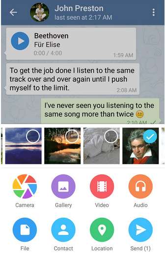
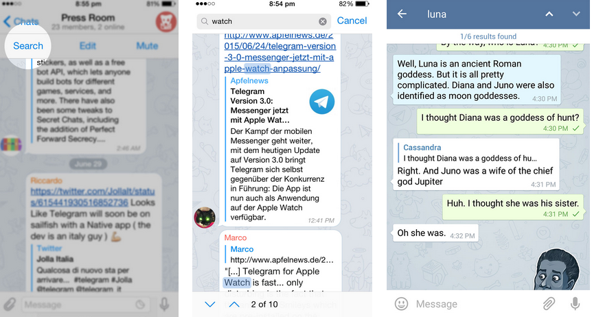

首頁 >
官方新聞 > 程式內的媒體播放及在聊天室中搜尋（原文）（最新手機版中文化檔案）
新版本的 Telegram 允許您直接從 Telegram 播放影音網站的媒體，如 YouTube、Vimeo 或 SoundCloud - 不需要離開應用程式。只需點擊一個連結到外部媒體的預覽，就可以觀看影片或收聽音訊檔（說話的音訊檔，它們現在在聊天室中可以完美地的呈現和播放）。
在 Android 上，新的附件選單不僅是絢爛而美麗的動畫；它也可以讓您以更簡單的方式分享聯絡人、音訊及最近的照片：

所有在 Telegram 的通訊原本就可以在全域搜尋中尋找，但現在您也可以搜尋特定的聊天室內容。只需輕按 iOS 聊天室的名字或切換 Android 中的動作選單開關，並點擊搜尋：

您會看到出現在聊天中關鍵字的數量，將能夠通過它們用向上/向下箭頭進行導覽。盡情享受吧！
電報團隊，
2015年7月17日